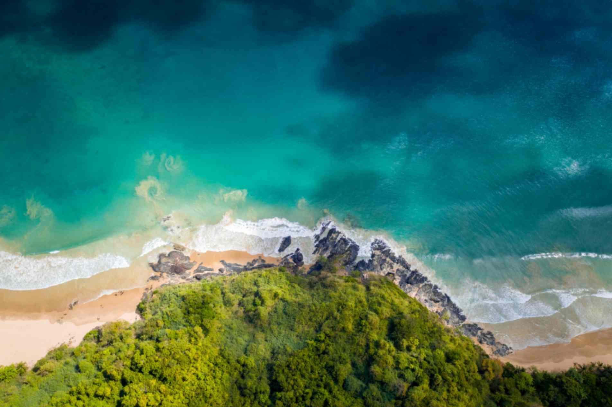
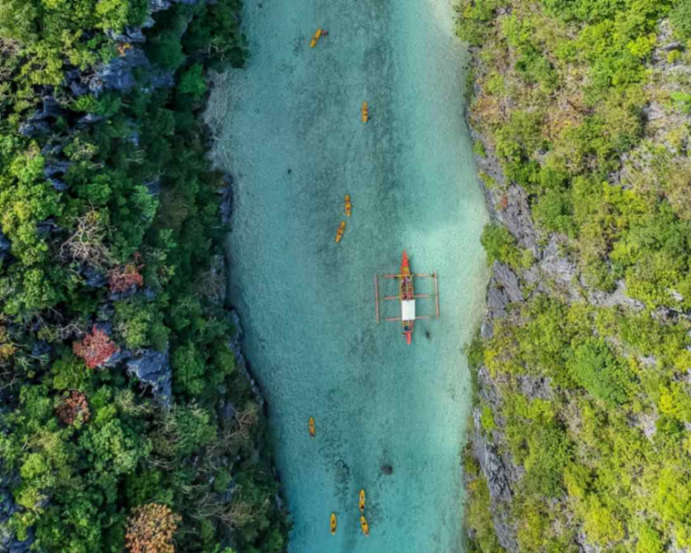
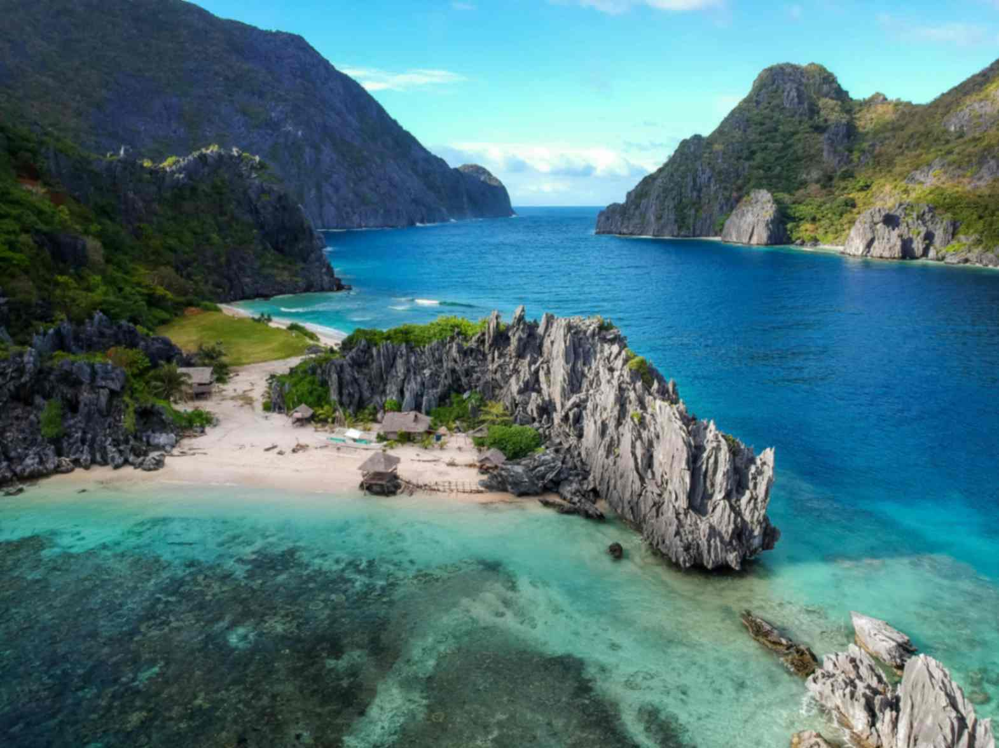
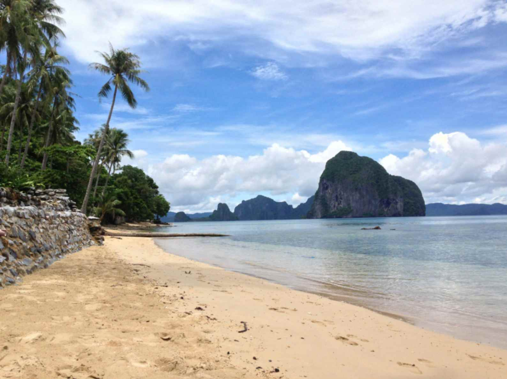
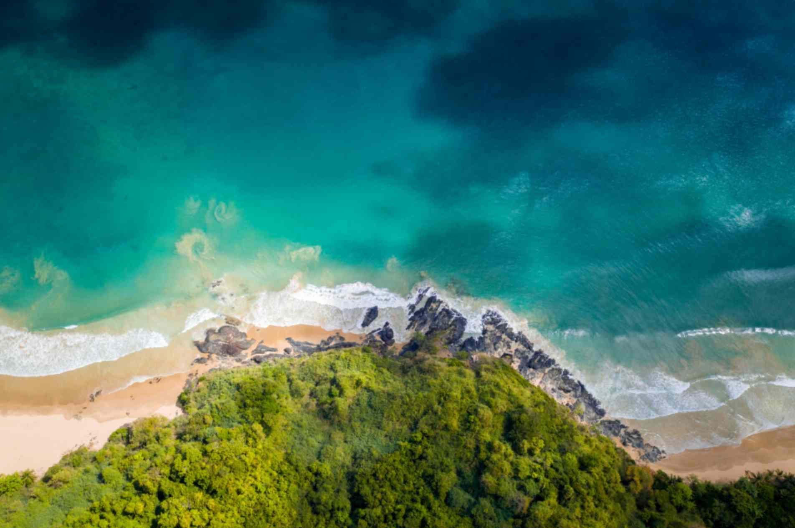
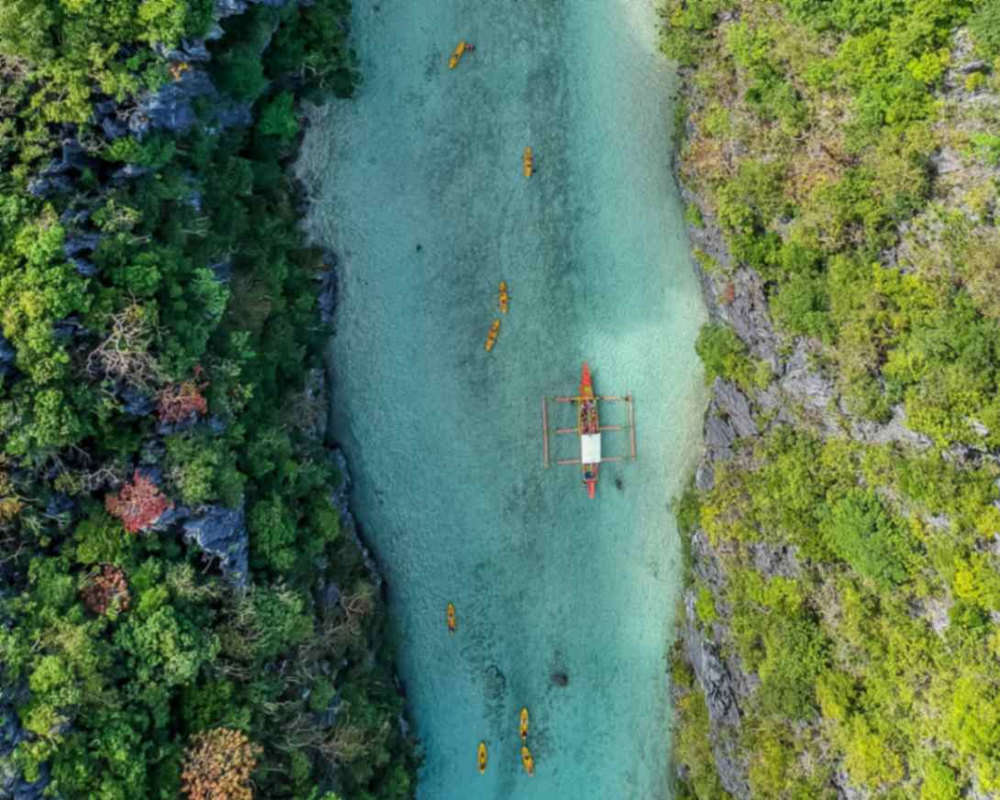
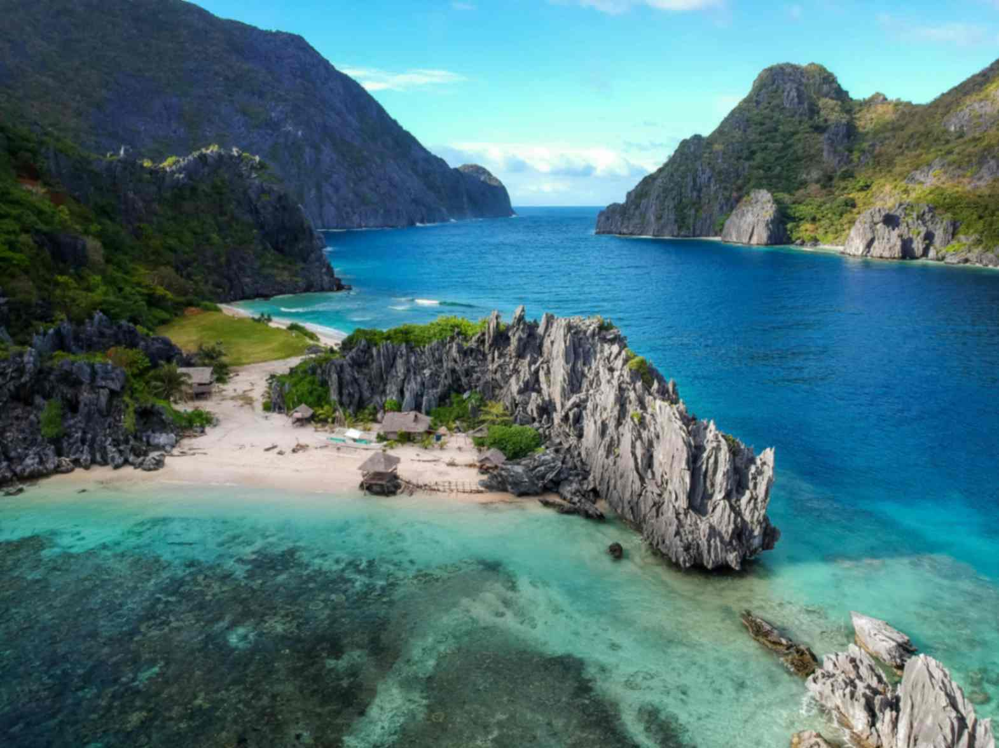
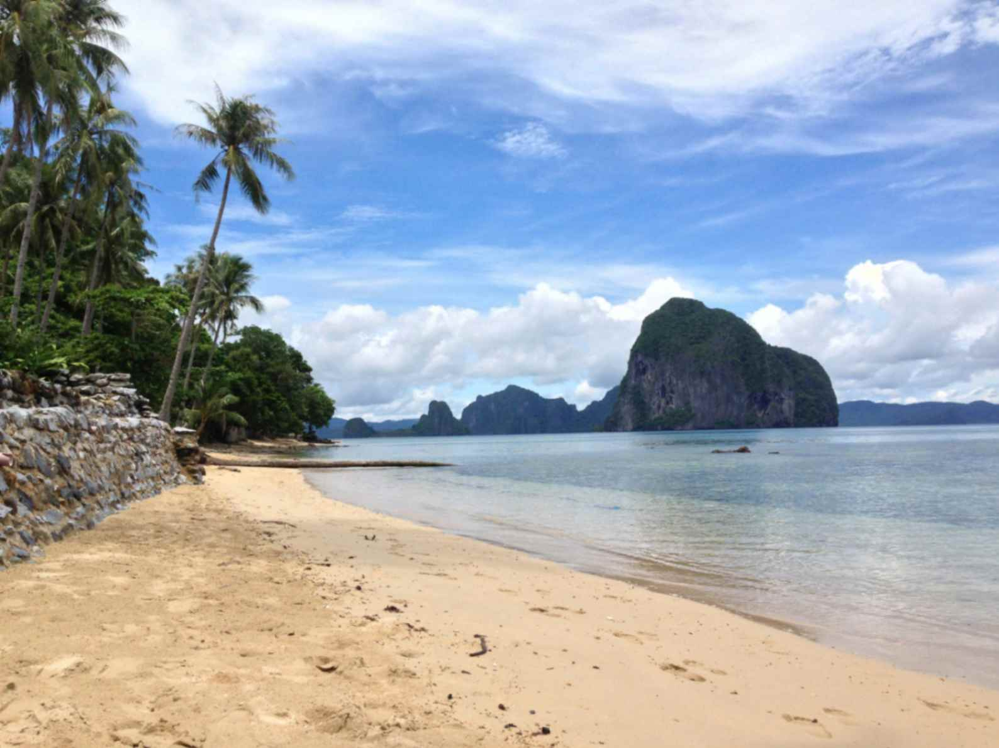

El Nido
El Nido is a municipality on the northernmost tip of the province of Palawan, characterized by awe-inspiring natural beauty, from dazzling lagoons, white sand beaches, rocky islets, and towering limestone cliffs to glasslike waters teeming with abundant marine life. No wonder El Nido has earned nothing but praise from visitors and numerous accolades for being one the best island and beach destinations in the world.

 







El Nido encompasses over 40 islands peppered across the Bacuit Archipelago, each with its own unique geological wonders but the same natural majesty. Its surrounding waters are a stunning mix of blue-green colors, its palm-fringed beach pockets have powdery sands, and its marine-protected areas offer some of the best diving experiences in the entire Philippines. Puerto Princesa serves as the gateway to El Nido, and together with Coron, these three areas are the most-visited in Palawan.